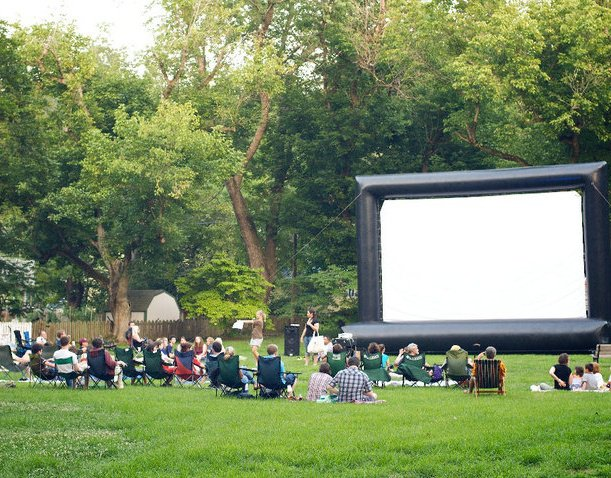
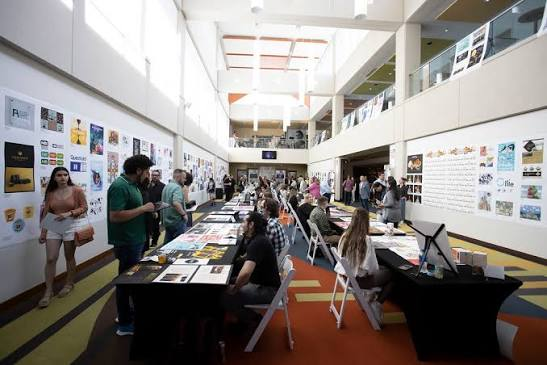

Spartan Fall Festival
Entertainment
University Lawn
Celebrate the fall season with music, food, games, and student organizations from across campus.
View Spartan Fall Festival DetailsDiscover activities, meet people, and get involved on campus.
Spartan Campus Events makes it easy for students to discover activities happening around campus. Explore upcoming opportunities involving entertainment, careers, wellness, and the arts.
Explore Upcoming Events
Entertainment
University Lawn
Celebrate the fall season with music, food, games, and student organizations from across campus.
View Spartan Fall Festival Details
Career Development
Elliott University Center
Meet employers and learn about internships and careers in technology and computer science.
View Technology Career Fair Details
Entertainment
Campus Recreation Field
Bring a blanket and enjoy a movie, popcorn, and a relaxing night with other students.
View Outdoor Movie Night Details
Health and Wellness
Student Recreation Center
Take a guided walk around campus while learning about healthy habits and wellness resources.
View Campus Wellness Walk Details
Arts and Culture
Campus Art Gallery
View original artwork created by students and meet some of the artists behind the featured pieces.
View Student Art Showcase DetailsThis guide helps students find activities that match their interests and become more involved in campus life. It brings important event information together in one convenient place.